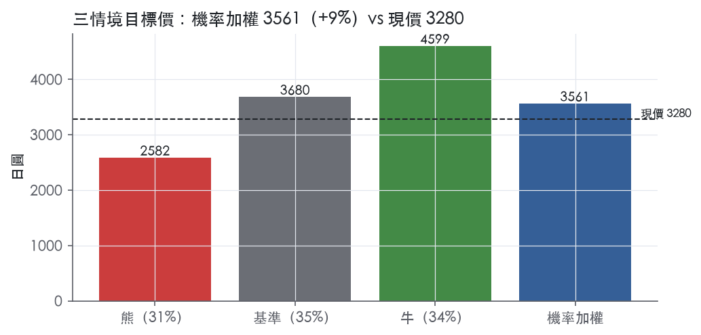

評等總表 › 未分類 › 8306.T
三菱ＵＦＪフィナンシャル・グループ（8306.T）
升息紅利未入價，倍數持平淨值複利看多｜評等 中立｜目標價 3561
評等歷史與財報快評
| 報告日 | 評等 | 目標價 | 當時股價 | 超額報酬 |
|---|---|---|---|---|
| 2026-11-17 | 中立 | 3,561 | 3,280 | +3.8% |
| 評等 | 中立（邊界，鄰近加碼） |
| 12 個月目標價 | 3561 日圓 |
| 現價 | 3280.00 日圓（2026-11-17） |
| 預期報酬 | 股價 +8.6%＋股息 3.0%＝總報酬 +11.6%；日股門檻 7.8%，超額 +3.8% |
| 估值方法 | P/TBV 1.8x，套在一年後的有形淨值 |
| 三情境 | 熊 2582／基準 3680／牛 4599 |
| 研究流程 | 四位研究員兩輪辯論＋研究總監裁決 |
| 資料來源 | EDINET、TDnet、J-Quants、Yahoo、FRED（全免費） |
目錄
第一章 結論摘要
升息紅利未入價，倍數持平淨值複利看多（研究總監裁決，四位研究員兩輪辯論後）
評等 中立（邊界，鄰近加碼）｜12 個月目標價 3561 日圓（總監三情境機率加權 3652 與研究員中位數 3470 各半）｜現價 3280.00（2026-11-17）
預期報酬：股價 +8.6%＋股息 3.0%＝總報酬 +11.6%。日股門檻 7.8%，超額 +3.8%，離加碼的分界不到三個百分點，屬邊界評等（落在其他級距的機率約四成）。
估值方法：P/TBV 1.8x，套在一年後的有形淨值。三情境：熊 2582（31%）／基準 3680（35%）／牛 4599（34%）。
立場看多而評等中立：評等看的是「預期總報酬 11.6% − 日股門檻 7.8%」＝超額 3.8%，不是絕對漲跌；看多但超額不足，代表上檔已被同業的預期報酬抵銷。
評等說明：研究總監自己的機率加權目標價 3652 日圓對應「加碼」；與研究員第二輪中位數 3470 日圓各半後為 3561 日圓，落入「中立」。兩者只差一級，請把這檔讀成「加碼～中立」，正文裡總監的立場文字以「加碼」寫成。
什麼會讓研究總監改變看法：日銀 2026-12 或 2027-03 未升息，或 FY2027Q3 短信將來見込調整額超過 50B 且貸倒引当金回升，轉中性；2027-05 新中計上調 ROE 目標並恢復半年 250B 以上買回，上調牛情境機率。
投資論點
- 存放利差擴大：日銀再升 75bp 擴大存放利差，稅前利益率維持 26%，高於基準 25%。
- 倍數持平即超額：市場只付 1.6x，我們給 1.8x 持平；報酬來自有形淨值累積與 3.0% 股息。
- 熊情境下檔深：日銀停在 1.50%、日圓 160 時倍數回 1.3x；熊情境離基準較遠，評等只給中立。
關鍵數字
| 過去四季（實際，FY2027Q2） | 未來四季 | 第 5–8 季 | 第 9–12 季 | |
|---|---|---|---|---|
| 淨營收（B） | 15,722.2B | 17,451.6B | 18,847.7B | 19,790.1B |
| 淨營收成長 | 15.1% | 11.0% | 8.0% | 5.0% |
| 稅前利益率 | 25.0% | 26.0% | 26.0% | 25.0% |
| EPS（日圓） | 243.96 | 302.83 | 330.36 | 336.90 |
| EPS 成長 | 48.2% | 24.1% | 9.1% | 2.0% |
| 每股股息（日圓） | — | 0.00 | 0.00 | 0.00 |
| ROTCE | 13.3% | 15.6% | 15.3% | 14.1% |
| 每股有形淨值（日圓） | 1842.13 | 2044.47 | 2275.31 | 2513.83 |
| P/E（現價） | 13.4x | 10.8x | 9.9x | 9.7x |
| P/TBV（現價） | 1.8x | 1.6x | 1.4x | 1.3x |
| 股息殖利率（現價） | 3.0% | — | — | — |
過去四季為申報數字；預測為研究總監的假設、程式計算。倍數與殖利率都用現價計算，用來看現價對應各期獲利的高低。
三情境
| 情境 | 機率（歷史） | 故事 | 未來四季營收成長 | 第 5–8 季稅前利益率 | 倍數 | 目標價 | 股價漲跌 |
|---|---|---|---|---|---|---|---|
| 熊 | 31%（33%） | 本行下行路徑（日銀停 1.50%、日圓 160、Baa 2.30）：對應風險表第 3 條不動產・金融業種與信費用上升、第 2 條外幣流動性擔保追加、第 5 條 TOPIX 下跌侵蝕保有股含益並切斷處分益；倍數回 3 年 P50 1.3x | 6.0% | 20.0% | 1.3x | 2582 | -21.3% |
| 基準 | 35%（35%） | 日銀 2027-06 到 2.00% 後暫停、日圓 153，稅前利益率 26% 持續到 Q5–Q8，倍數持平，報酬來自 TBV 累積與 3.0% 股息 | 11.0% | 26.0% | 1.8x | 3680 | 12.2% |
| 牛 | 34%（32%） | 日銀 2.25% 加美國上行（10 年 4.60、Baa 1.45）縮小海外資本成本溢價，ROTCE 新常態被承認，JGB 3.40 的 OCI 損（風險表第 1 條）限制倍數於 2.2x | 15.0% | 28.0% | 2.2x | 4599 | 40.2% |
目標價由程式依研究總監的驅動與倍數計算；機率由研究總監給定。括號內是歷史頻率：把這檔股票過去十年 12 個月報酬的波動形狀，置中在基準情境，結果落在各情境附近的比例。

四位研究員用不同方法各自估值，回應研究總監的質疑後交出第二輪，最後由總監逐點裁決。各研究員的主張見第七章，裁決理由見第八章，完整論證見《研究底稿》。
| 立場（一輪→二輪） | 加權目標價（一輪→二輪） | 評等（一輪→二輪） | 第二輪倍數 | 熊～牛目標價 | |
|---|---|---|---|---|---|
| R1 成長與敘事 | 看多→看多 | 3803→3554 | 加碼→中立 | 1.8x | 2773～4177 |
| R2 資本報酬與價值 | 中性→中性 | 3246→3283 | 減碼→中立 | 1.7x | 2387～3974 |
| R3 盈餘品質與下檔 | 中性→中性 | 3343→3387 | 中立→中立 | 1.8x | 2312～4190 |
| R4 市場隱含預期 | 看多→看多 | 3613→3606 | 加碼→加碼 | 1.8x | 2582～4599 |
| 研究總監裁決 | 看多 | 3561 | 中立 | 1.8x | 2582～4599 |
目標價由程式依各自的驅動與倍數計算；評等＝機率加權總報酬 − 日股門檻。
第二章 業務概況
公司做什麼、賣給誰
三菱UFJ金融集團（MUFG）是由當社、345家合併子公司及55家權益法適用關聯公司構成的綜合金融集團，以銀行業務、信託銀行業務、證券業務為核心，並從事信用卡・貸金業務、租賃業務、資產運用業務及其他業務。集團目標是成為「世界に選ばれる、信頼のグローバル金融グループ」，並導入跨越既有業態框架的「事業本部制」，由集團各公司協同、一元化制定戰略推動業務。從客戶結構看，MUFG 同時服務日本國內個人與法人客戶、海外日系大企業、非日系大企業、海外商業銀行出資標的的個人與中小企業客戶，以及國內外機構投資人、資產管理公司與退休金客戶。換言之，這是一家靠零售銀行＋法人銀行＋全球CIB＋受託資產四條腿走路的日本最大銀行控股公司，收益結構對日本國內利率走勢與海外（尤其美國、亞洲）商業銀行子行貢獻度都高度敏感。
業務分部與產品
MUFG 的報告分部按「顧客・業務別」劃分為八個事業本部：零售・數位事業本部、法人・財富管理事業本部、企業銀行事業本部、全球商業銀行事業本部、受託財產事業本部、全球CIB事業本部、市場事業本部及其他。零售・數位事業本部透過實體、遠距、數位管道向個人客戶（不含財富管理）及法人提供金融服務；法人・財富管理事業本部服務法人與財富管理客戶；企業銀行事業本部服務國內外日系大企業；全球商業銀行事業本部透過海外出資商業銀行向個人及中堅中小企業提供服務；受託財產事業本部提供國內外投資人、運用公司及企業的資產運用・資產管理・年金服務；全球CIB事業本部服務非日系大企業；市場事業本部提供外匯・資金・證券服務及市場交易、流動性管理業務。
以FY2026（截至2026年3月期）粗利益計，顧客部門小計為5,665.01B日圓，其中企業銀行事業本部1,125.92B日圓為最大單一分部，全球CIB事業本部1,081.47B日圓次之，零售・數位事業本部1,064.64B日圓、法人・財富管理事業本部866.90B日圓、全球商業銀行事業本部904.23B日圓、受託財產事業本部621.83B日圓；市場事業本部306.91B日圓、其他19.34B日圓，集團合計粗利益5,991.25B日圓。營業純益方面，顧客部門小計2,521.17B日圓，企業銀行事業本部706.96B日圓貢獻最大，全球CIB事業本部580.31B日圓居次，法人・財富管理407.98B日圓、零售・數位285.88B日圓、全球商業銀行387.56B日圓、受託財產152.48B日圓；市場事業本部為-35.45B日圓、其他-120.34B日圓，合計2,365.38B日圓。相較前一年度（FY2025）顧客部門小計粗利益2,247.02B日圓，顧客端分部整體呈兩位數成長。各分部的全年營收占比10-K未直接揭露，僅以粗利益／營業純益衡量規模。
資本支出面，FY2026集團設備投資合計504.89B日圓，其中三菱UFJ銀行330.92B日圓、三菱UFJ信託銀行75.63B日圓、三菱UFJ證券控股24.21B日圓、消費金融子公司（主要為三菱UFJ NICOS）56.58B日圓、其他17.55B日圓，投資方向以系統投資、分行改建及消費金融系統整合為主。
客戶、地區與通路
地域結構上日本本土仍是收益主力但海外占比超過四成。FY2026經常收益按地區分布為：日本6,980.60B日圓、美國2,951.84B日圓、歐洲・中東1,333.87B日圓、亞洲・大洋洲2,876.82B日圓、其他477.72B日圓，合計14,620.84B日圓，與資料包FY2026營收14,620.84B日圓一致。相較FY2025日本5,962.67B日圓、美國2,844.83B日圓、歐洲・中東1,339.02B日圓、亞洲・大洋洲2,860.03B日圓，日本與美國皆有成長，歐洲・中東略降。
通路上，集團透過三菱UFJ銀行、三菱UFJ信託銀行、三菱UFJ摩根士丹利證券、海外子行（如泰國Bank of Ayudhya、印尼Bank Danamon、美國MUFG Americas Holdings）及數位子公司（Japan Digital Design、三菱UFJ eSmart證券、WealthNavi等）提供服務。股權結構上，日本Master Trust信託銀行（信託口）持股15.58%、日本Custody銀行（信託口）5.37%為前兩大股東，顯示機構信託帳戶主導日股流通盤。
值得特別標注的是政策保有股（交叉持股）處分：三菱UFJ銀行FY2026出售約166.0B日圓（取得原價基礎，グループ銀行單純合算）政策保有股，使政策保有股時價餘額占合併淨資產比率降至18.0%，低於20%門檻，集團並訂下2024-2026三年間出售700.0B日圓政策保有股、同比率維持20%以下的目標。這呼應東證對PBR改善與資本效率的要求，持續處分交叉持股應有助股東報酬率與ROE敘事。
最近四季發生了什麼
最近四個報告季度顯示營收與利潤率同步上行、淨利逐季墊高的趨勢。FY2026Q3（2025年12月底）營收3,750.03B日圓、年增9.7%，營益率20.3%，淨利520.55B日圓、EPS 45.54日圓（is/bs系列對應期FY2026Q3）。FY2026Q4（2026年3月底）營收3,977.04B日圓、年增18.6%，營益率擴大至22.7%，淨利613.72B日圓、EPS 54.02日圓（期別FY2026Q4）。進入FY2027，FY2027Q1（2026年6月底）營收3,907.54B日圓、年增20.1%，營益率跳升至28.6%，淨利809.43B日圓、EPS 71.59日圓（期別FY2027Q1）；FY2027Q2（2026年9月底）營收4,087.55B日圓、年增12.3%，營益率28.0%，淨利821.47B日圓、EPS 72.81日圓（期別FY2027Q2），帶動LTM營收15,722.16B日圓、GAAP稀釋EPS 243.96日圓。
對照最新中間（半年）決算短信，當中間連結會計期間（2026年4月至9月）經常收益7,995.10B日圓，較前中間期6,893.78B日圓成長，經常利益2,260.96B日圓，較前期1,746.68B日圓成長，親會社股東歸屬中間純利益1,630.90B日圓，較前期1,292.96B日圓成長。這份決算短信未揭露全年業績計畫數字，無法與公司最新全年目標比較差距。信用成本方面，短信揭露三菱UFJ銀行對貸款損失率的未來展望調整影響額為29,870百萬円（即29.87B日圓），高於前一年度期末的24,357百萬円（24.36B日圓），反映中東地緣政治不確定性仍被納入保守計提。
公司自己說的成長引擎與策略
公司將本次中期經營計畫定位為「取りにいく成長」的三年，並以三大支柱推動：「成長戰略の進化」、「社会課題の解決」、「企業変革の加速」。在「成長戰略進化」下，具體包括強化國內零售顧客基盤以最大化Life Time Value、透過法人×WM業務模式強化事業承繼、推進GCIB・市場一體化商業模式提升資本效率、強化與Partner Bank的合作以掌握亞洲（「第2のマザーマーケット」）成長、貢獻「資產運用立國」實現、以GX（綠色轉型）為起點支援價值鏈，以及挑戰構築新事業組合。「企業變革加速」則涵蓋加速速度改革文化、擴充人力資本、增強系統開發資源與AI・資料基盤建設。公司並揭露以2026年度（中期經營計畫最終年度）為目標的ROE目標及資本運營目標，前提假設為日本政策利率約1%、美國FF利率3%台半、2026年度末日經平均5萬台半、日元兌日圓150日圓台前半。
從判斷角度看，MUFG 近四季的獲利成長主要來自日本國內利率正常化（日銀2025年12月升息）帶動資金收支擴大、海外（美國、亞洲）業務利差貢獻，以及股票・持分法投資損益（如Morgan Stanley權益法貢獻）放大。政策保有股的持續處分與庫藏股買回應能支撐股東權益報酬率敘事，但短信全年業績計畫數字未揭露，建議以公司5月公布的中期ROE目標與日銀升息路徑為後續追蹤重點。市場事業本部營業純益轉為虧損（FY2026為-35.45B日圓）是本期顧客部門強、交易部門偏弱的結構訊號，值得留意波動性。

第三章 經濟護城河
結論：無，趨勢變寬
MUFG 的評級為「無護城河」，趨勢為「變寬」。理由很直接：量化底稿裡，ROE 有資料的 9 年中只有 1 年高於資本成本，十年平均比資本成本低 3.3 個百分點。這些數字不足以支撐「未來 5 年以上 ROE 仍高於資本成本」的把握。公司在法人主力銀行關係、信託保管基礎設施和海外銀行牌照上有結構性優勢，但過去十年這些優勢沒有轉成超額報酬。最新一年 ROE 首次超過門檻，主因是日圓利率正常化，屬於景氣循環因素，不能算護城河。趨勢判為變寬，依據是顧客部門獲利擴張、交叉持股處分正在提高資本效率；要上調到「窄」，需要看到超額報酬在利率不再上升時也能維持。
優勢來源
轉換成本（法人主力銀行關係）：這是最強的一項，證據也最具體。
- 三菱UFJ銀行持有政策保有株，目的是透過維持、擴大與往來企業的綜合交易，增加發行公司集團的中長期經濟利益。
- 檢驗對象整體的綜合交易 RORA 約為目標值的 1.7 倍；以家數計，83% 的往來企業高於目標值。
- 前述特定投資股票的保有目的多寫明為「預金・貸出・為替等」的綜合交易關係。存款、放款、匯兌全部綁在同一家銀行，企業更換主力銀行的成本高。
- 企業銀行事業本部 FY2026 營業純益 706.96B 日圓，是最大的獲利分部。這說明黏著度最高的客群也是獲利核心。
效率規模（信託保管與市場基礎設施）：日本証券保管市場容不下多家同等規模的業者，MUFG 占有其中一席。
- 日本マスタートラスト信託銀行是合併子公司，議決權持有比率 46.50%。
- 同一家機構的信託口是 MUFG 本身最大股東，持股 15.58%。這顯示它是日股機構持股的主要保管通道之一。
- 受託財產事業本部 FY2026 營業純益 152.48B 日圓。
無形資產（海外銀行牌照與合資授權）：海外地方銀行的控股權等於取得當地牌照與客戶基礎，新進者難以複製。
- 集團持有泰國 Bank of Ayudhya 76.88%、印尼 Bank Danamon 92.47%，並以權益法持有 Morgan Stanley 23.87%。
- FY2026 持分法投資損益 845.55B 日圓，計入經常利益。
成本優勢（低成本存款資金）是銀行常見的護城河來源，但本材料沒有揭露資金成本或存款結構的直接證據，因此不列入。
數字上看得到嗎
數字和護城河主張衝突，這也是本章評級下修為「無」的主因。
ROE 與資本成本
- ROE 十年平均 6.9%，最低 3.3%，最新 11.3%；資本成本代理值為 10.2%。
- 十年平均減資本成本為 -3.3%，有資料的 9 年中只有 1 年高於資本成本。
- 寬或窄護城河應該看到長期超額報酬，MUFG 只有最新一年剛跨過門檻。
對評級的兩個修正因素
- 代理值似乎以美國 10 年債為基礎，日圓銀行實際的資本成本可能較低，因為日本 10 年債只有 2.841%。即使調低門檻，十年平均 ROE 6.9% 仍難證明長期超額報酬，因此不據此上調評級。
- 資料包年度表的 ROIC 欄全為負值，因為銀行負債是營業原料，ROIC 不適用，本章改用 ROE 檢驗。
利潤率穩定度
- 稅前利益率十年平均 19.1%、標準差 3.8%，區間 11.4% 到 24.5%。
- 利潤率波動不算大，但淨營收成長的標準差高達 18.5%。收入端受利率、匯率與市場收益左右，不是護城河帶來的穩定性。
部門結構
- FY2026 顧客部門小計營業純益 2,521.17B 日圓，市場事業本部為 -35.45B 日圓。
- 顧客端的黏著度是真的，但集團整體報酬被市場部門與信用成本稀釋。
什麼會侵蝕它
最大的侵蝕風險是利率順風消失，第二是公司自己拆解交叉持股這個轉換成本工具。
- 利率回落：公司的中長期 ROE 目標建立在日本政策利率約 1% 的前提上。假設落空，最新一年的超額報酬會隨之消失。
- 交叉持股處分：公司的基本方針是削減政策投資目的持股的餘額。處分提高資本效率，但也鬆動了以持股綁定交易的關係，轉換成本可能下降。
- 信用成本：FY2026 与信関係費用為 474.75B 日圓，前一年度為 302.26B 日圓。信用循環反轉會直接吃掉超額報酬。
- 權益法收益集中：持分法投資損益是經常利益的重要來源，這部分收益取決於 Morgan Stanley 等被投資公司的獲利，不是 MUFG 自有的護城河。
對估值的含意
目標倍數相對同業應該持平，不給溢價。過去十年沒有長期超額報酬，最新的超額報酬來自利率循環，用這一年的 ROE 外推高於同業的倍數，等於為景氣循環付護城河的價格。目前 P/TBV 1.8x，位於 5 年分位 93.4%，已經反映了大部分利率紅利；P/E 13.4x 接近 5 年中位數 13.6x，估值研究員應以中位數附近為上限，不再加碼。
量化底稿：報酬率與利潤率的水準與穩定度
| 指標 | 最新 | 十年平均 | 標準差 | 最低 | 最高 |
|---|---|---|---|---|---|
| ROE | 11.3% | 6.9% | 2.3% | 3.3% | 11.3% |
| 稅前利益率 | 22.7% | 19.1% | 3.8% | 11.4% | 24.5% |
| 淨營收成長 | 7.3% | 11.9% | 18.5% | -17.5% | 52.8% |
程式計算。資本成本代理值（10 年債＋5%）：10.2%；ROE 十年平均減資本成本：-3.3%；ROE 有資料的 9 年中，高於資本成本 1 年。
第四章 財務體質與盈餘品質
結論：中品質，資本與股東回饋紀律清楚，但銀行業的「現金流跟盈餘」框架不適用、且近兩年CFO由負債結構調整主導而非核心獲利轉差
本公司是銀行控股公司，CFO/FCF 的波動主要反映存款、貸款、有價證券與短期拆款的資產負債表變動，不能直接比照一般企業的「現金轉換率」來打分。FY2026 CFO 為-23,064.42B、FCF 為-23,737.56B（量化底稿 is/cf.FY2026），同期淨利為2,427.23B（量化底稿 is.FY2026），兩者方向相反，但原文明確指出原因是科爾資金（コールマネー）減少與借用金減少，屬於資金調度行為而非盈餘灌水。股東回饋（股利＋回購）／淨利 LTM 為48.8%、近三年平均54.3%、十年平均53.4%，燈號為黄，低於評分門檻的綠燈標準但無紅旗，屬於可接受區間。稀釋股數年變動LTM為-0.1%、近三年-2.5%、十年-1.9%，燈號為綠，代表庫藏股回購持續淨減少股數。
現金有沒有跟上盈餘
銀行的核心現金創造力應看經常利益與資金運用／調達利差，不是傳統CFO。FY2026（2026年3月期）經常利益比前期增加740.7B，達到3,410.1B；親會社股東淨利增加564.2B，達到2,427.2B（量化底稿 is.FY2026對應之淨利2,427.23B一致）。連結業務純益（一般貸倒引當金提列前、信託帳戶攤銷前）為2,377.2B，年增786.0B，是本業（資金收支、手續費收支、交易收支）賺到的錢，和淨利方向一致。但同期營業活動CF支出為23,064.4B，比前期多支出23,070.8B，原文寫明主因是科爾資金等的減少與借用金（不含次順位借入金）的減少——這是資產負債表收縮／資金來源置換，不是客戶存款流失或放款收不回來，屬於可解釋的假警報。投資活動CF則因有價證券出售收入增加而轉為收入4,473.9B，年增4,660.9B，財務活動CF因配息增加而支出1,149.8B，年增288.7B。期末現金及約當現金餘額為90,045.5B，較前期末減少19,049.9B。往更近的半期看，FY2027Q2累計CFO與FCF在量化底稿中仍顯示為LTM FCF -23,737.56B，顯示這個「CFO為負」狀態延續到最新一期，但半期短信的中間純利益1,630.9B（量化底稿對照原文1,630,897百萬円）仍穩定成長，和淨利方向脫鉤的主因同樣是資產負債表動作而非盈餘品質惡化。
公司調整了什麼（GAAP 與非 GAAP 的差距）
日本銀行業沒有美式「非GAAP調整後盈餘」揭露習慣，決算短信本期也未揭露全年業績計畫數字，因此這裡要看的是經常利益之上、之下的「特別損益」與「臨時損益」兩層級落差。FY2026全年，經常利益3,410.1B之上還有臨時損益（其他経常収益減各類費用）1,012.8B，其中股票相關損益4,860M部分來自前期政策保有股大額出售收益的反動，年減106.5B——這是真實的一次性比較基礎變化，不是本期操縱，但代表本期股票收益的「含金量」比前期低。信用成本（與信関係費用総額）為355.8B，年增247.1B，主因是前期有海外大額放款準備金迴轉的反向效果，這代表前期信用成本被一次性迴轉壓低，本期才是較正常水準，投資人應以本期數字為準，不應把前期信用成本當作常態基礎。特別損益項下另有持分法投資損益845.5B，年增248.5B，主因是入股的美系券商業績良好，這塊屬於真實但波動性高的收益來源，估值時不宜用當期數字線性外推。整體而言，連結業務粗利益5,944.4B年增1,125.1B中，有一部分是前期債券組合重組造成的出售損失反動（即基期效應），原文明確指出其他業務收支改善主因是前期債券組合重組售損的反動，這段增量屬於非經常性，分析師應扣除以還原本業成長速度。
資產負債表與資本配置
資本充足率（巴塞爾III國際統一基準）總自己資本比率16.85%，較前期末下降1.98個百分點，Tier1比率14.95%下降1.69個百分點，普通股權益Tier1比率12.47%下降1.71個百分點。下降主因是風險資產（リスク・アセット）增加133.5B至1,202.8B，而非資本流失（Tier1資本額仍增加1.8B至179.8B），屬於業務擴張（含海外併購）帶來的風險資產稀釋，而非資本惡化。股東權益合計較前期末增加201.6B至2,374.4B，主因是保留盈餘增加130.5B與其他綜合損益累計額增加65.6B。半期短信顯示FY2027H1自家股回購支出為100.0B、配息支出576.8B（決算短信2026-09-30期資料），回購規模較上年同期（半期自家股取得250.4B）明顯縮小，配息則因DPS提升而增加，呼應東證對PBR改善與股東回報的要求方向。信用品質面，銀行法及再生法基準下的不良債權餘額較前期末減少69.7B至1,460.7B，不良債權比率由1.11%降至0.96%，資產品質在改善而非惡化。
紅旗逐條說明
SBC／營收：計分表顯示LTM、三年、十年均為「—」、無燈號。日本大型銀行的股權激勵（株式給付引當金）規模極小，FY2026/FY2027H1財報中「株式給付引当金」僅個位數billion級別（如半期資產負債表株式給付引當金14.8B），相對營收規模（LTM營收15,722.16B）占比微小，程式未能抓到精確比率是資料缺口而非真紅旗。
稀釋股數年變動：LTM -0.1%、三年-2.5%、十年-1.9%，燈號綠，規則判定為真實的庫藏股回購效果，無需解釋；配合半期短信揭露FY2027H1自家股取得100.0B仍持續執行，可信。
（股利＋回購）／淨利：LTM 48.8%低於綠燈門檻50%、但未達紅燈（<0%）區間，為黄燈。這不是紅旗、是因為分母（淨利）本期成長212.33 EPS快於股東回饋金額的成長速度所致的機械性稀釋，屬於盈餘加速期的常見現象，不代表管理層縮手股東回報。
CFO/FCF 長期為負或劇烈波動（FY2024、FY2026、FY2027Q2 LTM）：程式計分表未單獨列此項為紅旗，但FY2024 CFO為-9,844.86B、FY2026為-23,064.42B、LTM FCF為-23,737.56B（量化底稿 is/cf.FY2024,FY2026），數字夠大需要正面回應。原文已說明FY2026的CFO支出擴大主因是科爾資金與借用金減少，屬於銀行資產負債表管理下的資金來源置換，不是客戶存款流失或放款違約，判定為會計口徑／業務性質造成的假警報，不應套用一般企業的CFO紅旗標準。
對估值的含意
估值應以經常利益與親會社股東淨利為核心基準，而非嘗試套用CFO／FCF做現金轉換率調整，因為後者在銀行業反映的是資產負債表規模變化而非盈餘真實性。本期股票相關損益、信用成本迴轉與債券組合重組反動等一次性項目應從本業成長率中剔除，用經常利益3,410.1B與連結業務純益2,377.2B的年增速度（786.0B）來評估可持續獲利能力，而不是直接外推含一次性收益的淨利成長率212.33 EPS。槓桿面，Tier1與普通股權益Tier1比率雖下降但仍遠高於監管要求（總所要自己資本額96,225百萬円換算9.6225B對比總資本202,736百萬円換算20.2736B），不構成限制倍數的理由，P/B 1.8x（量化底稿 band.p_tbv現值）相對5年中位數1.0x已明顯上修，應更依賴股東回饋黄燈與ROE軌跡而非盈餘品質打折來決定估值倍數。
量化底稿：盈餘品質計分表
| 項目 | LTM | 近三年 | 十年 | 燈號 | 規則 |
|---|---|---|---|---|---|
| SBC／營收 | — | — | — | — | ≤3.0% 綠、>8.0% 紅 |
| 稀釋股數年變動 | -0.1% | -2.5% | -1.9% | 綠 | ≤0.0% 綠、>3.0% 紅 |
| （股利＋回購）／淨利 | 48.8% | 54.3% | 53.4% | 黃 | ≥50.0% 綠、<0.0% 紅 |
程式計算；燈號以 LTM（無則近三年平均）判定。銀行的現金流、淨負債、利息保障是本業，不列入。
第五章 主要風險
結論：最大的風險是全球金融市場波動透過有價證券評價損與信用成本，直接侵蝕資本與盈餘，其中「資本餘力下降・風險資產增加」與「外幣流動性風險」被公司自己列為2026年3月風險委員會認定的最優先頂級風險。
五大風險表
| 風險 | 觸發指標（看什麼數字、在哪裡看） | 對 EPS 的影響方向與粗略幅度 | 未來 12 個月發生機率（高／中／低） | 出處 |
|---|---|---|---|---|
| 資本餘力下降・風險資產增加（全球利率上升導致債券評價損擴大） | 日本10年期公債利率（現行2.841%）、美國10年期公債利率（現行5.15%）；資料包其他有價證券評價差額金（半年報2,026-09-30為1,448.72B日圓，較2026-03-31的1,672.08B日圓已下降） | 方向：負向；幅度：大（直接衝擊自己資本比率與資本緩衝） | 中 | |
| 外幣流動性風險（市況惡化導致外幣流動性枯竭或調度成本大增） | 日圓兌日圓匯率（現行159.93）、信用評等變動公告、三個主要子公司（三菱UFJ銀行、三菱UFJ信託銀行、三菱UFJ證券控股）信用評等調整 | 方向：負向；幅度：原文揭露若全降1段需追加擔保約23.8B日圓，全降2段約149.4B日圓（皆為抵押品追加成本，非直接等於EPS影響） | 低 | |
| 與信費用增加（全球實體經濟急速失速或特定業種信用惡化） | 每期決算短信揭露的與信關係費用、貸倒引当金餘額（FY2026末為1,229.95B日圓，半年報2026-09-30降至1,159.36B日圓）；不動產業種與金融業種與信集中度（原文揭露此兩業種占比相對高） | 方向：負向；幅度：中（視業種信用惡化程度，資料包未給具體EPS敏感度） | 中 | |
| IT／網路安全風險（網路攻擊導致客戶資料外流、服務停止或信譽受損） | 任何重大系統故障或資安事故公告、金融廳行政處分公告 | 方向：負向；幅度：原文未給量化數字，僅定性描述「賠償費用支付及信譽惡化」 | 低 | |
| 保有股票（含政策保有股）風險（股價下跌導致減損或評價損，並影響自己資本比率） | TOPIX／日經平均走勢；政策保有股時價餘額（FY2026末時價合計約3,700.0B日圓，簿價約1,000.0B日圓） | 方向：負向；幅度：中（公司正逐步處分，2024-2026三年目標處分700.0B日圓，降低曝險） | 低 |
逐條說明
資本餘力下降・風險資產增加是公司2026年3月風險委員會認定的首位頂級風險，情境為「全球利率上升時，債券評價損擴大對資本運營的影響」。這條風險的傳導路徑很直接：MUFG持有大量國債與海外證券，若日本及美國長債利率繼續上行，有價證券評價損會侵蝕其他有價證券評價差額金，進而壓低自己資本比率。資料包顯示半年報（2026-09-30）其他有價證券評價差額金已從FY2026年末的1,672.08B日圓降至1,448.72B日圓，降幅約223.36B日圓，方向與風險敘事一致。同期日本10年期公債利率2.841%、美國10年期公債利率5.15%，兩者皆處於近年高位區間，是這條風險最直接的監測指標。
外幣流動性風險是第二大頂級風險，情境為「市況惡化導致外幣流動性枯竭或調度成本大幅增加」。原文罕見地給出量化情境：若公司及三大子公司信用評等全部降1段，衍生性商品交易需額外提供擔保約23.8B日圓；若全降2段，則約149.4B日圓。這個數字本身不大，但它是外幣流動性壓力的具體量化觸發點，可作為監測基準。日圓兌日圓匯率現行159.93，處於日圓偏弱水準，若日圓流動性緊縮同時遇到日圓大幅波動，外幣調度成本上升的風險會放大。
與信費用增加排在第三，公司明確點名「不動產業種及金融業種向け與信相對比重較高，容易受這些業種業績惡化影響」。資料包顯示FY2026年末貸倒引当金餘額1,229.95B日圓，半年報（2026-09-30）降至1,159.36B日圓，顯示上半年信用狀況尚屬平穩。但最新短信同時揭露三菱UFJ銀行對未來展望的信用成本調整影響額達29.87B日圓，高於前期末的24.36B日圓，公司自己註明這與中東地緣政治不確定性有關。這是一個值得持續追蹤的早期訊號：引当金餘額本身在降，但前瞻性調整額卻在升，代表管理層對未來景氣的保守程度提高。
IT／網路安全風險公司列為頂級風險第五項，情境包括「網路攻擊導致客戶資料外流、服務停止及信譽惡化」與「系統故障發生補償費用支付及信譽惡化」。這條風險無法給出具體財務數字，公司原文也只用定性描述，但監測方式明確：任何重大系統故障或資安事故的對外公告、金融廳是否發出業務改善命令都是直接觸發點。考量MUFG過去已有因銀證間資訊不當共用遭金融廳業務改善命令、以及行員盜竊保管箱客戶資產事案並接受報告徵求的前例，這類操作風險的尾部案例有前例可循，不是純理論風險。
保有股票（含政策保有股）風險排在第五，原文揭露FY2026年末市場性股票（含政策保有股）時價合計約3,700.0B日圓，簿價約1,000.0B日圓。若股價下跌，減損或評價損會發生或擴大，且因自己資本比率計算納入保有股票的未實現損益，股價下跌也會直接拖累資本比率。不過這條風險的機率被我們判為低，因為公司正系統性處分：2024-2026三年計畫處分700.0B日圓政策保有股，且FY2026政策保有股時價占合併淨資產比率已降至18.0%、低於20%門檻，曝險正在收斂。
公司沒寫、但我們認為該注意的
日銀升息路徑對NIM擴張的可持續性：近四季營益率明顯擴張（FY2027Q1單季28.6%、FY2027Q2單季28.0%），很大程度受惠於日本國內利率正常化帶動資金收支改善，但有報「事業等のリスク」並未把「升息放緩或日銀政策轉向」單獨列為風險情境，只在總體不確定性中帶過。若日銀升息步調低於市場目前預期（現行日本10年期公債利率2.841%隱含的升息路徑），資金利益成長動能可能提前觸頂，這對目前股價已反映的盈餘成長敘事是一個需要單獨監測的變數。
莫根士丹利權益法貢獻的波動性集中度：公司持有莫根士丹利普通股權益法比例23.9%（2026年3月底），意味MUFG合併損益會直接隨莫根士丹利自身業績及持股比例變動而波動，但這條風險被原文歸類在「戰略提携」章節，並未被納入2026年3月風險委員會認定的頂級風險清單，也沒有與資本或信用風險並列量化。考量這是一筆對單一外部公司的大額集中投資，我們認為應獨立列為監測項目，觀察莫根士丹利各季財報與MUFG持分法投資損益科目的對應變動。
第六章 市場在定價什麼
現價 3280.00 對應 trailing（過去四季）P/E 13.4x、P/TBV 1.8x（ROTCE 13.3%）、股息殖利率 3.0%。主要估值倍數 P/TBV 現在 1.8x，落在5 年區間第 93 百分位（P10／P50／P90 = 0.6x／1.0x／1.7x）。

把程式的機械基準預測放到現價下，市場付的前瞻倍數是：P/TBV（未來四季） 1.6x、P/E（未來四季） 10.9x、P/TBV（第 5–8 季） 1.4x、P/E（第 5–8 季） 9.9x。
| 倍數 | 現在 | 5 年 P10 | 5 年 P50 | 5 年 P90 | 現在分位 | 全期 P50 |
|---|---|---|---|---|---|---|
| P/E | 13.4x | 7.9x | 13.6x | 19.8x | 49.3% | 10.2x |
| P/TBV | 1.8x | 0.6x | 1.0x | 1.7x | 93.4% | 0.7x |
trailing 倍數（股價 ÷ 過去四季）；分位以每個交易日計算。
（日股同業籃尚未建置：評等門檻用日股絕對門檻＝日本 10 年公債＋股權風險溢酬 5%，見首頁。）
程式的機械基準（成長率從過去四季年增率三年收斂到 6%、利潤率持平）用 P/TBV 5 年 P50（trailing） 估值得到 2146（-34.6%），用現行倍數得到 3653。這兩個數字只是參考點，不是本報告的目標價；研究員對這個定價的回應在第七章。
第七章 四位研究員的看法
下表是每位研究員第一輪（各自獨立）與第二輪（回應研究總監的質疑後）的結果。目標價全由程式依各自的假設計算。
| 立場（一輪→二輪） | 加權目標價（一輪→二輪） | 評等（一輪→二輪） | 第二輪倍數 | 熊～牛目標價 | |
|---|---|---|---|---|---|
| R1 成長與敘事 | 看多→看多 | 3803→3554 | 加碼→中立 | 1.8x | 2773～4177 |
| R2 資本報酬與價值 | 中性→中性 | 3246→3283 | 減碼→中立 | 1.7x | 2387～3974 |
| R3 盈餘品質與下檔 | 中性→中性 | 3343→3387 | 中立→中立 | 1.8x | 2312～4190 |
| R4 市場隱含預期 | 看多→看多 | 3613→3606 | 加碼→加碼 | 1.8x | 2582～4599 |
| 研究總監裁決 | 看多 | 3561 | 中立 | 1.8x | 2582～4599 |
目標價由程式依各自的驅動與倍數計算；評等＝機率加權總報酬 − 日股門檻。
分歧度：第一輪 加權目標價 3246～3803（區間＝現價的 17%）· 倍數 1.6～1.9x · 立場 看多×2、中性×2；第二輪 加權目標價 3283～3606（區間＝現價的 10%）· 倍數 1.7～1.8x · 立場 看多×2、中性×2。

| 研究員 | 第二輪主張 | 堅持的理由 |
|---|---|---|
| R1 成長與敘事 | 看多，1.8x P/TBV；稅前利益率 26%，第三年才回到 25%。 | 三年歷史多在零利率期，不能當錨；利差擴大是時滯，不是一次性。 |
| R2 資本報酬與價值 | 中立，1.7x P/TBV，錨在過去一年市場付的中位數。 | 沒有結構性證據就不偏離中位數；熊情境倍數壓到 1.2x。 |
| R3 盈餘品質與下檔 | 中立，1.75x P/TBV；撤回準備金回沖說，核心獲利屬經常性。 | 日圓 153 與債券評價損侵蝕有形淨值，倍數要低於現行 1.8x。 |
| R4 市場隱含預期 | 看多，1.8x P/TBV；市場低估國內利差延續，稅前利益率 26%。 | 債券評價損屬利率上行風險，放在牛情境當倍數上限，不放熊情境。 |
每位研究員的逐條回應與完整論證見《研究底稿》（8306.T_研究底稿_2026-11-16.docx）。
第八章 研究總監裁決
分歧登記
| 分歧點 | R1 | R2 | R3 | R4 | 什麼資料會分出勝負 |
|---|---|---|---|---|---|
| ① 半期 28% 稅前利益率能否延續（op_margin_y1／y2） | 26／25.5／25%：經常性利差在擴大，一次性成分拆不出 | 26／25／24%：順風鈍化後回落 | 27／26.5／26%：半期是在費用上升下做到的 | 26／26／25%：錨在 LTM 25% 加日銀 75bp | 2027-02-15 FY2027Q3 短信経常利益率能否站上 24%（前年同期 20.3%） |
| ② 目標倍數（multiple） | 1.8x：ROTCE 平台上移對沖 OCI 侵蝕 | 1.7x：回 1y P50，無結構性理由偏離中位數 | 1.75x：低於現行部分只歸 TBV 軟成分 | 1.8x：等於市場持平點 | FY2027 有報その他有価証券評価差額金、為替換算調整勘定期末值；FY2027Q3／Q4 ROTCE 是否仍近 15% |
| ③ Q5–Q8 營收成長（rev_growth_y2） | 9%（基準） | 9%（回基準） | 6%：日圓 153 與日銀暫停 | 8%：拿掉 y2＞y1，保留再投資時滯 | 2027-05 決算短信 FY2028 業績予想與新中計利率前提 |
| ④ 買回步調（share_change_pct） | -0.6%：與上半期 100.03B 同量級 | -1.0%：回饋重心轉向股利、CET1 變薄 | -1.0% | -1.0% | 2027-05 決算短信買回決議規模；FY2027 有報 CET1 |
| ⑤ 熊情境深度與對應風險 | 1.4x／33%，風險表第 1 條 | 1.2x／33%，未看到風險表 | 1.2x／31%，第 3、5 條 | 1.3x／32%，第 3、2 條 | 2027-02-15 FY2027Q3 短信：貸倒引当金（2026-09-30 為 1,159.36B）與將來見込調整額（29.87B）是否上調 |
逐點裁決
① 利潤率：選 R4，26／26／25%。 經常性的部分有證據：上半期資金運用収益 4,748.52B（前年同期 4,183.71B）的增幅大於資金調達費用 2,897.42B（2,743.76B）的增幅，貸出金利息 2,299.57B（1,995.92B）的增幅也大於預金利息 1,129.97B（1,006.65B）；本行日本前提還有 75bp 要升，銀行指引明寫「擴大存放利差」，所以基準照 LTM 25% 持平偏低。R3 的 27% 不接受：NTM 窗口含兩個季節性偏弱的季度，前年同期是 20.3% 與 22.7%（／Q4），27% 要求下半年遠高於去年；他的證據（営業経費由 1,609.87B 升到 1,776.33B 下仍做到 28%）R4 也用了，而他兩次各加 1pp 只是撤回自己錯誤的空方主張（回沖、稅率重複扣），撤掉一個錯的負項不等於多一個正項。R2 的 y3 24% 只有「順風鈍化」沒有機制；本部營業利益紀錄系統性偏低（研究總監 -2.4%、R2 -4.8%），R4 是唯一無偏誤的來源（+0.2%、勝過基準 74%）。y3 回 25% 的理由：700.0B 政策保有株處分計畫在 2026 年度結束，FY2026 其他業務收支改善是前期債券重組售損的反動，兩者不延伸到 Q9–Q12。
② 倍數：選 R4（R1 同），1.8x。 程式檢查表把 1.8x 標為市場持平點（+1%），R2 的 1.7x 低它 5%。R2 的理由是「回 1y P50」——中位數是一個位置，不是未來十二個月倍數收縮的機制；他剩下的理由（JGB 到 3.00 推高要求報酬）被原則 7 擋掉。R3 的機制是真的也是個股的：その他有価証券評価差額金半期由 1,672.08B 降到 1,448.72B、繰延ヘッジ損益由 -1,262.83B 擴大到 -1,438.36B、為替換算調整勘定 3,716.19B 在日圓回到 153 時會縮，機械模型的 TBV 不隨 OCI 動。但同份短信給了反向力量：親会社株主歸屬中間純利益 1,630.90B（前年同期 1,292.96B），基準模型 NTM ROTCE 15.5% 遠高於程式算合理倍數 2.4x 時用的 11 季平均 10.3%，而市場對 NTM TBV 只付 1.6x（基準模型市場隱含表）。兩股力量方向相反、量級相當：護城河評「無」、P/TBV 在 5 年帶 93.4% 分位，不給 ROTCE 溢價；OCI 侵蝕由不給溢價吸收。2.4x 只當上緣參考：g 夾在 6% 對要求報酬 7.8%，公式極度敏感，且美國 2,951.84B、亞洲・大洋洲 2,876.82B 的經常收益讓 JGB＋5% 低估資本成本。
③ Q5–Q8 營收：選 R4，8%；NTM 選 R1，11%。 基準與 R2 的 9% 假設再投資時滯完全抵銷 2027-06 之後的暫停；R3 的 6% 靠日圓 153，但升值主要打到 3,716.19B 的換算調整（TBV 的事，已在②處理），對損益流量的影響取決於年度平均匯率，材料裡沒有，不能給 3pp。R4 的 8% 保留 JGB 3.00 下的再投資時滯，拿掉他自認無存款 β 證據的 y2 加速。NTM 取 11%：上半期経常収益 7,995.10B（前年同期 6,893.78B）仍兩位數，三次升息全落在 NTM 內，但年增率已由 FY2027Q1 的 20.1% 降到 Q2 的 12.3%（／Q2），本行日圓 153 低於現值，取基準 12% 與 10% 之間。y3 取 R4 的 5%。
④ 買回：選 R2，-1.0%。 上半期自己株式取得 100.03B（前年同期 250.41B）、配息 576.85B（449.73B），CET1 12.47%、降 1.71 個百分點，基準 -1.5% 忽略這點。R1 的 -0.6% 把一個半年外推成常態：買回半年一決，政策保有株時價約 3,700.0B、簿價約 1,000.0B的含益庫存還在，近三年股數年變動 -2.5%（財務體質章）說明前一個步調；-1.0% 落在兩者之間。
⑤ 熊情境：選 R4（1.3x，營收 6／3／3%，利潤率 22／20／22%）。 R1 把熊掛在風險表第 1 條（債券評價損），但那條的觸發是利率上行（本行上行 JGB 3.40），下行情境 JGB 反而回 2.30，R1 混了兩條路徑；R4 正確地把第 1 條放進牛情境倍數上限。R2 沒看到風險表。R3 的 2312.45（相對現價 -30%）落在歷史尾部（置中分布 P10 -38%、P25 -24%），不是熊區中心；R4 的 2581.87 錨在 3 年 P50 1.3x，程式對照也放在熊區中心附近。我只把 R3 指出的第 5 條（TOPIX 下跌切斷處分益並侵蝕保有股含益）補進故事，驅動與倍數不動。
漂移與總經偏離。 R1 向中位數靠攏 54%，逐條看過：G1 引用其他経常収益由 773.85B 跳到 1,138.88B 與債券重組基期、G2 引用 1 年帶分位、G3 引用 100.03B 與 CET1，都是回應我的意見並附新證據，G3 甚至移離中位數，不退回；R2 的 V3、R3 的 Q2／Q3 都是撤回站不住的主張後移動，有證據。drift_rejections 為空。四人的 macro_deviations 皆空：R3 的日圓 153、R4 牛情境的美國上行路徑都是本行前提，沒有要退回的；我的利潤率依本行銀行指引「再升 75 bp 擴大存放利差」，無偏離。
最終假設與目標倍數
與機械基準不同的驅動（其餘沿用；D&A、資本支出、SBC 對銀行無意義）：
- rev_growth_y1 11%（基準 12%；③，R1）；rev_growth_y2 8%、y3 5%（基準 9%、6%；③，R4）。
- op_margin 26／26／25%（基準 25／25／25%；①，R4）。
- tax_rate 25%（基準 23.3%；R3、R4 一致）：上半期法人税等合計由 406.86B 增到 554.39B，增幅大於稅前利益由 1,770.52B 到 2,255.62B 的增幅，法人税等調整額由 42.59B 增到 112.13B（假設）。
- share_change_pct -1.0%（基準 -1.5%；④，R2）。
目標倍數 1.8x P/TBV，主尺 tbv、期間口徑 未來四季（自家 trailing 帶配 ntm）。錨：自家 1 年 trailing 帶 P50 1.7x 與 P90 1.9x 之間，等於現行 1.8x 與市場持平點；這段帶全在脫離負利率之後，5 年 P50 1.0x 屬負利率時代不可比。相對同業：日股同業籃尚未建置，依護城河章「無護城河、不給溢價」處理為持平。參考點：基準模型用現行 1.8x 得 3653（+11.4%），R4 以近似驅動得 3685.19；點估由程式算。
三情境與機率
- 基準（35%，director）：日銀 2026-12 升到 1.50%、2027-06 到 2.00% 後暫停，日圓 153，稅前利益率 26% 維持到 Q5–Q8，倍數持平 1.8x，報酬來自 TBV 累積與 3.0% 股息。
- 牛（34%，取自 R4）：日本上行（日銀 2.25%）加美國上行（10 年 4.60、Baa 1.45）縮小海外資本成本溢價，ROTCE 新常態被承認；營收 15／11%、利潤率 28／28／27%、股數 -1.5%，倍數 2.2x，JGB 3.40 的 OCI 損是上限（風險表第 1 條放這裡）。程式結果 4598.56。
- 熊（31%，取自 R4，故事補第 5 條）：本行下行路徑（日銀停 1.50%、日圓 160、Baa 2.30、失業率 5.1），不動產與金融業種與信費用上升（第 3 條）、評等下調觸發外幣擔保追加一段 23.8B、兩段 149.4B（第 2 條）、TOPIX 下跌切斷處分益並侵蝕保有股含益（第 5 條）；營收 6／3／3%、利潤率 22／20／22%，倍數回 3 年 P50 1.3x。程式結果 2581.87。
機率從歷史出發：程式對這組情境距離的對照是牛／基準／熊 32／35／33%。我給 34／35／31，牛高於熊 3 個百分點，順序與歷史相反，公司特有證據：(i) 日銀 2026-12、2027-03、2027-06 三次會議，本行路徑到 2.00% 高於市場定價，對利率敏感的銀行意外方向在上；(ii) 2027-05 新中期經營計畫：現行中計前提是政策利率約 1%、美國 FF 3% 台半、日圓 150 台前半，在本行 2.00%／4.38%／153 下重設會把目標上拉，上半期 1,630.90B 已跑在前面；(iii) FY2026 与信関係費用総額 355.8B 已是前期迴轉反動後的正常水準，熊情境沒有「失去迴轉順風」這層；(iv) 本部 22 份報告全部熊高於牛，是要修正的偏誤。不再往牛偏的理由：置中分布左偏（P10 -38% 對 P90 +29%）、CET1 降 1.71 個百分點、護城河評「無」。
我們與市場的差距在哪
市場在現價對基準預測只付 NTM P/TBV 1.6x、NTM P/E 10.9x（基準模型市場隱含表），等於預期一年內倍數收縮；我們認為倍數持平 1.8x，差距主要在倍數——本行日銀路徑下 15.5% ROTCE 的耐久度——其次在盈餘：稅前利益率 26% 對基準 25%，來自 75bp 的存放利差。立場看多；評等由程式算，若落在中立，原因是這檔股票 12 個月報酬分布左偏，使熊離基準的距離大於牛，不是中心看法偏低：基準情境含股息的總報酬明顯高於 7.8% 絕對門檻（基準模型 1.8x 參考點 +11.4%，股息率 3.0%）。
可證偽主張
- FY2027Q3 單季親会社株主歸屬純利益 ≥ 650B，2027-02-15 前。
- FY2027 全年資金運用収益年增額 > 資金調達費用年增額（決算短信 FY2027 連結損益計算書），2027-05-20 前。
- FY2027 与信関係費用総額（有報経営者分析口徑）≤ 450B（FY2026 為 355.8B；假設門檻），2027-06-30 前。
- 2027-05 決算短信 FY2028 親会社株主帰属純利益予想 > FY2027 實績，且新中計政策利率前提 ≥ 1.75%，2027-05-31 前。
- FY2027 有報普通股權益 Tier1 比率 ≥ 12.0%（假設門檻），2027-06-30 前。
目標價拆解（程式計算）
現價 3280.00 → 點估目標價 3680 → 機率加權目標價 3652 → 目標價 3561，差距拆成五段：成長順延 +373 日圓（市場現行倍數 1.8x 一年後持平、獲利照機械基準）；倍數差 +40 日圓（總監倍數 1.8x vs 市場持平倍數 1.8x，同一機械基準預測）；盈餘差 -13 日圓（總監預測的未來四季有形淨值 22,860.0B vs 機械基準 22,827.9B，同一倍數）；情境不對稱 -28 日圓（機率加權減點估）；研究小組平均 -91 日圓（總監機率加權 3652 與研究員第二輪中位數 3470 各半）。各段相加等於目標價減現價。本階段未接賣方共識，差距以市場隱含預期為對照。
第九章 估值與目標價
驅動假設：機械基準 vs 研究總監
| 驅動 | 機械基準 | 研究總監 | 差異 |
|---|---|---|---|
| 未來四季營收成長 | 12.0% | 11.0% | -1.0 pp |
| 第 5–8 季營收成長 | 9.0% | 8.0% | -1.0 pp |
| 第 9–12 季營收成長 | 6.0% | 5.0% | -1.0 pp |
| 未來四季稅前利益率 | 25.0% | 26.0% | +1.0 pp |
| 第 5–8 季稅前利益率 | 25.0% | 26.0% | +1.0 pp |
| 第 9–12 季稅前利益率 | 25.0% | 25.0% | +0.0 pp |
| 稅率 | 23.3% | 25.0% | +1.7 pp |
| 股數年變動 | -1.5% | -1.0% | +0.5 pp |
研究總監只寫偏移，未寫的沿用基準。銀行的 D&A、資本支出、SBC 不影響估值，不列。
研究總監假設下的三年預測
| 期 | 淨營收 | 成長 | 稅前利益率 | 稅前利益 | 淨利 | EPS | 每股股息 | 期末有形淨值 | 每股有形淨值 |
|---|---|---|---|---|---|---|---|---|---|
| 未來四季 | 17,451.6B | 11.0% | 26.0% | 4,537.4B | 3,403.1B | 302.83 | 0.00 | 22,860.0B | 2044.47 |
| 第 5–8 季 | 18,847.7B | 8.0% | 26.0% | 4,900.4B | 3,675.3B | 330.36 | 0.00 | 25,186.7B | 2275.31 |
| 第 9–12 季 | 19,790.1B | 5.0% | 25.0% | 4,947.5B | 3,710.6B | 336.90 | 0.00 | 27,548.7B | 2513.83 |
程式依上表的驅動計算；季度用最近四季季節性分攤；不含營運資金變動。
目標價
估值方法：P/TBV 1.8x，套在一年後的有形淨值。研究總監目標倍數的錨：自家 1 年 trailing P/TBV 帶 P50 1.7x 與 P90 1.9x 之間，等於現行 1.8x 與市場持平點；ROTCE 平台上移與 OCI 侵蝕互抵，護城河無故不給溢價；同業籃未建置，相對同業持平。
計算：有形淨值（未來四季期末） 22,860.0B × 1.8x＝權益價值 41,148.0B，除以未來四季的股數 → 點估目標價 3680（12.2%）；隱含 P/E（未來四季）12.2x、P/E（第 5–8 季）11.1x。
總監三情境機率加權目標價 3652，研究員第二輪中位數 3470，兩者各半＝目標價 3561；預期報酬 股價 +8.6%＋股息 3.0%＝總報酬 +11.6%；減評等門檻 7.8%（日股絕對門檻 7.8%（日本 10 年公債 2.84%（2026-11-12）＋股權風險溢酬 5%；日股同業籃尚未建置））＝超額報酬 +3.8% → 評等 中立（超額 >+15% 買進、+5～+15% 加碼、±5% 中立、−5～−15% 減碼、<−15% 賣出）。同一份資料重開研究小組，超額約有正負四個百分點的雜訊（一個標準差，二十檔實測）；以此估計，評等落在其他級距的機率約四成。超額離加碼的分界不到三個百分點，應視為邊界評等。
| 情境 | 機率 | 未來四季成長 | 第 5–8 季成長 | 第 5–8 季稅前利益率 | 有形淨值（未來四季期末） | 倍數 | 目標價 |
|---|---|---|---|---|---|---|---|
| 熊 | 31% | 6.0% | 3.0% | 20.0% | 22,206.7B | 1.3x | 2582 |
| 基準 | 35% | 11.0% | 8.0% | 26.0% | 22,860.0B | 1.8x | 3680 |
| 牛 | 34% | 15.0% | 11.0% | 28.0% | 23,253.8B | 2.2x | 4599 |
第十章 可證偽主張與追蹤點
| 主張 | 驗證日 | 看哪個數字 | 門檻 |
|---|---|---|---|
| FY2027Q3 單季親会社株主歸屬純利益不低於 650B | 2027-02-15 | >= 650B | |
| FY2027 全年資金運用収益年增額大於資金調達費用年增額 | 2027-05-20 | 決算短信 FY2027 連結損益計算書 資金運用収益與資金調達費用 | 資金運用収益年增額 > 資金調達費用年增額 |
| FY2027 与信関係費用総額不超過 450B | 2027-06-30 | 有報 FY2027 経営者による財政状態等の分析 与信関係費用総額 | <= 450B |
| FY2028 業績予想高於 FY2027 實績且新中計政策利率前提上調 | 2027-05-31 | FY2028 親会社株主帰属純利益予想；新中計日本政策利率前提 | > FY2027 實績；利率前提 >= 1.75% |
| FY2027 期末普通股權益 Tier1 比率維持 12% 以上 | 2027-06-30 | 有報 FY2027 普通株式等 Tier1 比率 | >= 12.0% |
到期由程式結算（第 5 階段帳本）。
附錄 A 年度財務摘要
| 期 | 淨營收 | 成長 | 稅前利益率 | 淨利 | EPS | 每股股息 | ROE | ROTCE | 每股有形淨值 | 效率比 | 稀釋股數 |
|---|---|---|---|---|---|---|---|---|---|---|---|
| FY2017 | 5,979.6B | — | 21.8% | 926.4B | 67.99 | — | — | 6.6% | — | — | 13.6B |
| FY2018 | 6,068.1B | 1.5% | 23.2% | 989.7B | 74.28 | — | 6.3% | 6.7% | — | — | 13.3B |
| FY2019 | 6,697.4B | 10.4% | 17.1% | 872.7B | 66.61 | — | 5.4% | 5.8% | 1161.90 | — | 13.1B |
| FY2020 | 7,299.1B | 9.0% | 11.4% | 528.2B | 40.70 | — | 3.3% | 3.6% | 1125.79 | — | 13.0B |
| FY2021 | 6,025.3B | -17.5% | 17.3% | 777.0B | 60.25 | — | 4.7% | 5.1% | 1193.87 | — | 12.9B |
| FY2022 | 6,075.9B | 0.8% | 24.5% | 1,130.8B | 88.05 | — | 6.7% | 7.2% | 1239.88 | — | 12.8B |
| FY2023 | 9,281.0B | 52.8% | 16.9% | 1,116.5B | 90.41 | — | 6.5% | 7.0% | 1318.25 | — | 12.3B |
| FY2024 | 11,890.4B | 28.1% | 17.2% | 1,490.8B | 124.32 | — | 8.1% | 8.3% | 1529.47 | — | 12.0B |
| FY2025 | 13,630.0B | 14.6% | 18.7% | 1,862.9B | 159.47 | — | 9.3% | 10.0% | 1617.27 | — | 11.7B |
| FY2026 | 14,620.8B | 7.3% | 22.7% | 2,427.2B | 212.33 | — | 11.3% | 11.9% | 1798.63 | — | 11.4B |
EDINET 有價證券報告書 XBRL（舊年度 US GAAP 公司只有經營指標摘要）；每股數據已依拆股換算到現在股數基準。銀行的營業利益＝稅前利益；CFO、FCF、淨負債對銀行沒有意義，不列。
附錄 B 季度財務摘要（最近 12 季）
| 期 | 期末 | 推導 | 淨營收 | 稅前利益率 | 淨利 | EPS | 淨利息收入 | 效率比 | 信用成本率 | 淨沖銷率 | ROTCE |
|---|---|---|---|---|---|---|---|---|---|---|---|
| FY2024Q2 | 2023-09-30 | 2,891.6B | 18.5% | 368.9B | 30.60 | — | — | — | — | 8.1% | |
| FY2024Q3 | 2023-12-31 | 2,842.0B | 18.4% | 370.6B | 30.88 | — | — | — | — | 8.5% | |
| FY2024Q4 | 2024-03-31 | 3,382.7B | 8.6% | 192.9B | 16.55 | — | — | — | — | 4.3% | |
| FY2025Q2 | 2024-09-30 | — | — | — | — | — | — | — | — | — | |
| FY2025Q3 | 2024-12-31 | 3,417.3B | 19.5% | 490.7B | 41.85 | — | — | — | — | 9.6% | |
| FY2025Q4 | 2025-03-31 | 3,352.4B | 7.4% | 114.0B | 10.05 | — | — | — | — | 2.4% | |
| FY2026Q1 | 2025-06-30 | 3,253.9B | 21.8% | 546.1B | 47.45 | — | — | — | — | 10.9% | |
| FY2026Q2 | 2025-09-30 | 3,639.8B | 28.5% | 746.9B | 65.32 | — | — | — | — | 15.8% | |
| FY2026Q3 | 2025-12-31 | 3,750.0B | 20.3% | 520.6B | 45.54 | — | — | — | — | 9.7% | |
| FY2026Q4 | 2026-03-31 | 3,977.0B | 22.7% | 613.7B | 54.02 | — | — | — | — | 12.1% | |
| FY2027Q1 | 2026-06-30 | 3,907.5B | 28.6% | 809.4B | 71.59 | — | — | — | — | 14.3% | |
| FY2027Q2 | 2026-09-30 | 4,087.6B | 28.0% | 821.5B | 72.81 | — | — | — | — | 15.8% |
日本財報是年初至今的累計數：單季＝累計相減（Q2＝6 個月−3 個月、Q4＝年度−9 個月）；第 1、3 季多半不揭露現金流量表，單季現金流常空白，LTM 現金流用半年度拼。

附錄 C 資料來源、方法與限制
- 財報：EDINET XBRL（有價證券報告書、半期報告書、2023 年度以前的四半期報告書）＋TDnet 決算短信＋J-Quants 短信摘要（edinet_docs 35、tdnet_tanshin 1、jquants_periods 8）；行情：yahoo (split-adjusted close)；總經：FRED（含日本 10 年公債、日圓兌日圓）；本行總經前提（研究總監 2026-11-01 裁決：通膨黏3%、再升兩碼不降，成長放慢不衰退）。資料截至 2026-11-17，報告建於 2026-11-16。
- 原始文件：10k_item1_business.md（有価証券報告書 FY2026 2026-06-24）；10k_item1a_risk.md（有価証券報告書 FY2026 2026-06-24）；10k_item7_mda.md（有価証券報告書 FY2026 2026-06-24）；8k_2026-11-13.md（決算短信 2026-11-13）
- 數字規則：正文每個數字都對得回資料包、原文或程式計算；代理不得自行計算；目標價全由程式計算。
- 模型限制：不含營運資金變動；FCF ≈ 淨利 + D&A + SBC − 資本支出；利息費用、股利、買回金額按最近 LTM 持平；淨負債只隨 FCF、股利、買回變動；季度分攤用最近四季的季節性比例，無其他季內假設；EBITA 用最近 LTM 的攤銷／D&A 比例推算；攤銷缺資料時 EBITA = EBITDA × 0；稅率夾在 5%–35%，股數年變動夾在 ±15%；FFO ≈ 淨利 + D&A（NAREIT 推估，預測期不含處分損益與減損）；不是公司公布的 AFFO；有形普通股權益 = 前期 + 淨利 − 股利 − 買回（股利、買回按 LTM 持平）；EPS = 淨利 × 歸屬比例（近 4 季稀釋 EPS × 稀釋股數 ÷ 淨利：扣特別股股利、非控制權益）÷ 年內平均稀釋股數；每股淨值與目標價用期末股數；金融業：營業利益即稅前利益，模型不再扣利息
- 拆股：無；歷史股價換算：yahoo split-adjusted。
- 估值段：四位研究員盲審、研究總監挑錯、研究員第二輪回應、總監裁決；本階段未接賣方共識。
- 研究底稿（8306.T_研究底稿_2026-11-16.docx）收錄研究員第一、二輪全文、研究總監第一輪審查、總監引用的證據清單。
- 本報告為建置中版本，用途是驗證機制而非投資建議。
本報告由 equity-desk 多代理系統產出，建置中版本，僅供內部研究與方法驗證，不構成投資建議。所有數字以 datapack.json 為準。